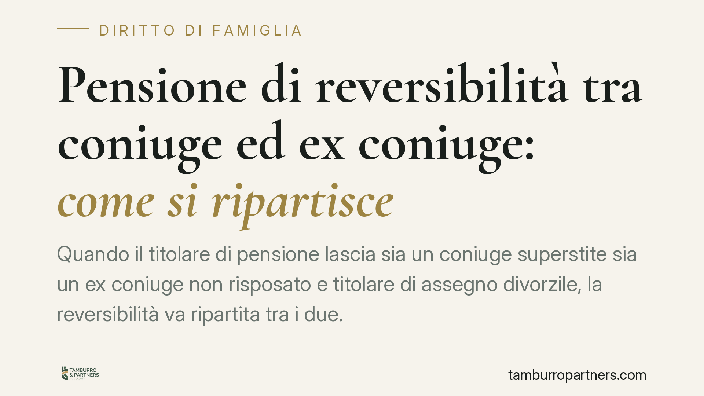

Pensione di reversibilità tra coniuge ed ex coniuge: come si ripartisce
Quando il titolare di pensione lascia sia un coniuge superstite sia un ex coniuge non risposato e titolare di assegno divorzile, la reversibilità va ripartita tra i due. La durata dei rispettivi rapporti è il criterio di partenza, ma non l'unico: la giurisprudenza, da oltre vent'anni, richiede una valutazione più ampia. Vediamo presupposti e regole operative.

Il problema: due aventi diritto sulla stessa pensione
Alla morte del pensionato può accadere che a chiedere la reversibilità siano due soggetti: il coniuge con cui era sposato al momento del decesso (coniuge superstite) e un precedente coniuge divorziato. In questa ipotesi la pensione non spetta integralmente a uno solo, ma va suddivisa tra entrambi.
La questione ricorrente riguarda i criteri di questa suddivisione: conta solo quanto è durato ciascun matrimonio, o rilevano anche altri elementi? È un tema che incide direttamente sull'importo mensile percepito da ciascun avente diritto.
Inquadramento normativo
La disciplina si trova nella legge sul divorzio (L. 1 dicembre 1970, n. 898). L'art. 9, comma 3, prevede che, in caso di concorso tra coniuge superstite ed ex coniuge entrambi aventi diritto, il giudice ripartisca il trattamento di reversibilità *tenendo conto della durata del rapporto*. Diverso è il comma 2 dello stesso articolo, che regola l'ipotesi in cui il coniuge superstite non vi sia: in quel caso l'ex coniuge può conseguire la pensione in via esclusiva.
La durata del matrimonio, però, non opera come criterio automatico ed esclusivo. La Corte costituzionale, con la sentenza n. 419 del 1999, ha chiarito che il parametro temporale è il criterio principale ma deve essere integrato da ulteriori elementi correttivi, tra cui l'entità dell'assegno riconosciuto all'ex coniuge e le condizioni economiche delle parti. Si tratta quindi di un principio consolidato da tempo, ripreso con continuità dalla Cassazione: l'importo dell'assegno divorzile non costituisce un tetto invalicabile alla quota attribuibile all'ex coniuge.
Il doppio presupposto per l'ex coniuge
Perché l'ex coniuge possa concorrere alla reversibilità devono ricorrere due condizioni, entrambe necessarie:
- titolarità dell'assegno divorzile: deve essere beneficiario di un assegno periodico ai sensi dell'art. 5, comma 6, L. 898/1970. La ratio della reversibilità è infatti la prosecuzione di quel sostegno economico dopo la morte dell'obbligato;
- mancanza di nuove nozze: l'ex coniuge non deve essersi risposato.
Da questa impostazione discende un corollario rilevante. Chi, al momento del divorzio, ha definito i rapporti economici con una liquidazione una tantum (un importo unico in luogo dell'assegno periodico) non è di norma titolare di un assegno divorzile periodico. In quanto la reversibilità presuppone proprio quella titolarità ex art. 5, comma 6, in questi casi la giurisprudenza tende a escludere l'accesso al trattamento. È un punto da verificare sempre leggendo gli atti del divorzio.
Cosa cambia per il coniuge superstite
Il coniuge superstite deve essere consapevole che la presenza di un ex coniuge titolato può ridurre la propria quota. La ripartizione non è una semplice proporzione matematica sulla durata dei matrimoni: il giudice può modularla in base agli altri criteri correttivi. Un matrimonio più lungo non garantisce automaticamente la quota maggiore in misura proporzionale.
Cosa cambia per l'ex coniuge
L'ex coniuge divorziato, titolare di assegno e non risposato, non è automaticamente escluso dalla presenza di un nuovo coniuge del defunto. Ha diritto a concorrere e la sua quota può superare il valore capitalizzato dell'assegno che percepiva: l'importo dell'assegno è uno degli elementi di valutazione, non un limite rigido.
Cosa fare in concreto
- Reperire gli atti del divorzio: sentenza o accordo, con particolare attenzione alla natura dell'assegno (periodico oppure liquidazione una tantum).
- Verificare la titolarità attuale dell'assegno al momento del decesso e l'assenza di nuove nozze.
- Ricostruire la durata dei rapporti, dalla celebrazione alla cessazione per ciascun matrimonio, con documentazione anagrafica.
- Presentare per tempo la domanda all'INPS, allegando la documentazione a sostegno della propria posizione.
- In caso di concorso, considerare che la ripartizione può essere oggetto di accertamento giudiziale: è opportuna una valutazione preventiva della posizione individuale.
La materia è tecnica e l'esito dipende dalla ricostruzione puntuale dei fatti e degli atti. Una verifica accurata della documentazione è il presupposto di qualsiasi iniziativa, sia essa una domanda o una contestazione.
---
*Contributo informativo a cura di Tamburro & Partners Avvocati. Non costituisce parere legale.*
Ogni famiglia ha il suo equilibrio.
Separazione, divorzio, affidamento, assegno: se vuoi un confronto riservato su una specifica situazione, scrivi allo studio. Ti rispondiamo entro un giorno lavorativo.